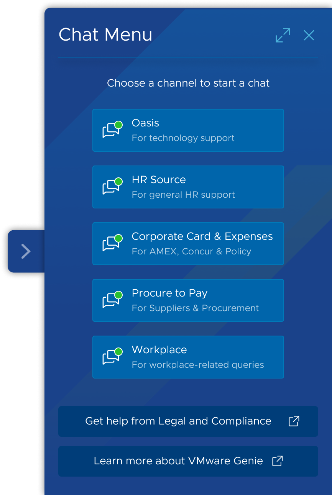

Challenges
Metrics vs User Experience
Engineering team's focus on the time-to-response metric resulted in a jarring user experience.
Through user testing, I demonstrated user preferences for slower UI updates.
Convinced engineers to capture time-to-response metric in the background while slowing down UI updates for optimal user experience.

Advocating for Design Consistency
Legal & Compliance team wanted us to break established design patterns for their unique circumstance.
I managed demanding stakeholders, advocated for design consistency, and proposed an alternate solution.
The biggest challenge was to prevent the Genie team from becoming a bottleneck & enable teams to self-manage their channel's conversation flows.